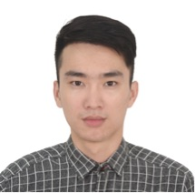

黄润良的简历
- 13360522195
- cherbini@qq.com
- Shenzhen, China
- bryce-huang.club

您好，我是黄润良，我目前专注于 Java开发，DevOps，云计算，微服务和kubernetes的各类场景应用。我在过去 2 年中参与了多个价值超千万的项目。在项目中承担了大量的研发和devops工作，对微服务有较深的个人理解，对openshift与kubernetes有丰富的生产使用经验。
Work Experience
软件开发工程师 - Software Engineer
担任软件开发工程师，DevOps工程师。作为软件开发工程师，承担项目中底层资源设计与开发、对外数据接口设计与开发。作为DevOps工程师，对现有CI/CD进行优化，提升了流水线的效率与安全性，大量参与kubernetes与openshift生产化的工作，如：kubernetes客户环境适配、kubernetes服务监控与告警落地 。
- Java: Spring Boot/Spring Cloud/Mybatis-plus/Spring Cloud Stream
- DevOps: Openshift/kubernete/Docker/Git/Jenkins/Ansible/Shell
- Ops: Prometheus Operator/EFK/ELB/VPC/ECS/RDS
- Architect: 微服务/容器云/SaaS
开发工程师(实习)- Software Engineer
担任开发工程师（实习）,参与客户需求分析，需求反讲，程序设计与开发。客户项目为报表统计类，使用微服务体系作为基础架构，采用spring boot与dubbo作为分布式基础技术。
- Architect: 微服务
- Java: Maven/Junit/Guava/SpringBoot/Mybatis
- HTML/CSS/Jquery
- MySQL
Projects
HR-X平安智慧人事管理系统
由平安30多年大型人事管理经验凝聚而成，由集团ceo亲自参与设计，自主研发的智慧人事管理系统，包含人才招 聘，绩效管理，培训发展，薪酬激励，员工服务+数据平台，以大数据为底构建员工全景档案，通过人岗画像匹配，为人事五大场 景提供智慧决策建议，HR-X已为平安集团旗下30多家子公司，40多万员工提供智慧人事服务。
YUM 报表平台
项目为 KFC（肯德基）母公司 YUM（百胜餐饮集团）的报表平台，主要负责处理 KFC 的业务数据可视化。例如： KFC 宅急送数据处理与展示，KFC 日常原材料损耗情况数据处理。
Information
个人评价
- 个人自学能力强，爱总结，喜欢研究新技术与技术落地
- 熟悉业界各类领先技术，对技术有浓厚的兴趣，喜欢编程
- 个人性格外向，独立自主，团结友爱，心理抗压能力强，吃苦耐劳，敢于面对和克服困难
- 具有两年2年完整的大型项目开发经验,对项目立项到项目环境搭建以及实施流程熟悉